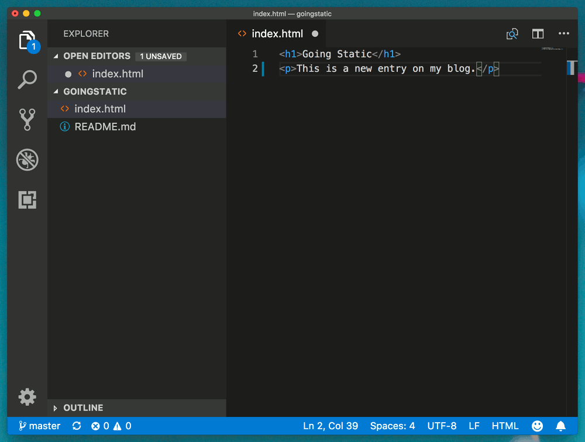

home / 2019.01.27 11:20 / blog / web design / github / visual studio code
I've given you the what and why in my previous post, and in this post I'll go over the how. How do you publish a static website for free today? This is were I give you a step-by-step account of the methods and tools I use.
It is not the objective of this tutorial to teach you HTML or CSS, which you should have some knowledge of before you can write your own site. They are very simple, easy to learn, and I would dare opinionate every person using the internet should understand them.
Git is a version control system. This kind of system is used by developers to keep a history of the code files they edit. Git works with repositories, a repository being a folder filled with files and other subfolders. Everything in that folder will be version controlled. What this means is that after you make some changes to some of the files in your repository, you can commit them, creating a record of the state of your folder at the time you created the commit. As the project evolves, you keep making changes to your files and commiting them. This will create a history of your files in Git's database. If you want, you can easily return to the state of the folder from three/five/twenty commits ago. If you made a wrong change, you can revert it, which means returning to the previous commit.
Git is also distributed, which means that the history of your project can be held in multiple places. If you create an account on GitHub (or Bitbucket, or GitLab, or many others) you can upload your project history there. You, and other people, can then work on your project on multiple computers, at the same time, and synchronize your histories when necessary. You move your latest changes from your local history to the history on the remote repository by pushing. And if you want to bring changes that are on the remote repository but you don't have in your local repository, you need to pull them.
Version control systems have a lot of functionality that is very useful when developing a software project, but in the context of a blog, all you have to think about is making some changes to your blog, commiting them and then pushing them to GitHub, which will publish those changes on your website and make them visible to your readers.
Installing Git on your machine will be easy, just download the kit from their website (available for Linux, Mac and Windows) and go through the wizard. Keep the defaults.
Now you need to create an account on GitHub. We are using GitHub because they offer the GitHub Pages functionality, which lets people view your repository as a website. Go to their website and create an account.
I've ran into some trouble loading the captcha on Firefox, probably caused by extensions too agressive towards scripts and ads, so you may have to try a few browsers to complete the registration process.
Select the free plan and you can skip the other questions, you don't really need an organization or to provide information about your programming expertise.
Don't forget to confirm your email address, and you are done, you now have an account on GitHub and can create your website.
On the GitHub website you have a "+" simbol in the top right corner of the page. Click that, and click new repository.
Give it a name and leave it public. Your repository needs to be public to create a website that is accessible to people on the internet. Select the option to initialize the repository with a readme.
GitHub Pages has a very clear, simple tutorial on how to create a web page from your git repository. We will use the "Project site" option (because this lets you run multiple websites from your GitHub account).
I will also go with the "Start from scratch" option. They guide you through creating an index file on your master branch and commiting it.
Then you need to configure your repository, by going into the "Settings" tab and under the "GitHub Pages" section select "master branch" as your "Source". Click "Save".
That's all you need to do to have a free static website, that you can already see by navigating to a web address consisting of your username plus .github.io/ plus your repository name: https://trswebtest.github.io/goingstatic/.
This was all you needed to have your website up, but I will also go over the tools I use to make maintaining a static website more manageable.
Visual Studio Code is a cross-platform source code editor that I am currently using to handle the entire process of editing and publishing my site. It gives you functionality to write your website in Markdown format, convert the Markdown to HTML, edit your HTML and CSS files to customize your site, and commit and push data to GIT. All you need besides Visual Studio Code is a browser. (If you're a technincal, you can of course adapt this pipeline to your preferred editor)
Open a Visual Studio Code window and select "Open folder...", choose some folder on disk where you want your website(s) to reside.
Then, in the Visual Studio Code menu (you may have to press the Alt key for the menu to be visible) choose "Terminal" and click "New Terminal".
You will now have a terminal window in your VS Code workspace.
Now you need the address of your repository from GitHub. Go to your GitHub repository page and click on the "Clone or download" green button and copy that HTTP address to clipboard.
Now go back to the terminal in Visual Studio Code and write git clone followed by that address. Press Enter and your repository will get cloned on your computer.
Once this is done, select "Open folder..." again and there navigate to the newly created folder containing your repository. Open that folder in Visual Studio Code.
Now let's make some changes to the site. You can close the "Welcome" page and open your main page, "index.html". Add something to that page and save it.

Now your site is updated, but this update is only on your computer. We want to commit this change to the git history (save it to git) and then push the changes to the remote repository. Only once the changes are in the remote repository will the page on the web get updated.
In the side bar, select the source control screen (which should have a small notification that you have one change). Here, under "CHANGES" you can see all the files that are changed but not yet commited. If you don't see any changed files, you may need to click the refresh button at the top.
There is a text box at the top where you must enter a commit message (it is required). Write some message there about the change you have made and click the "tick" to commit the change.

Now, to push your change to the remote repository, select the three dots button and in the expanded menu select the "Push" action.
You will be asked to provide your GitHub username and password.
After this, the push operation is done, so you can now navigate to your website and view the change.
This will be your work process to publish your website. You will work locally, adding pages, editing blog posts. You can open your local html files in your browser to see how they look. Once your are satisfied with your website, you can use Visual Studio Code to commit and push your changes. After a minute or two after you push your changes, your website will also be updated online.
https://code.visualstudio.com/Docs/editor/versioncontrol https://alvinalexander.com/git/git-show-change-username-email-address
One little trick I want to show you here is how you can use your index page to redirect to any other page on your website. I use this approach on my image blog, where I have a main page for each year. The specific case I wante to solve is that the "home page" of my website in 2018 was 2018.html, and in 2019 it changed to 2019.html. I want to redirect people to the current home page when they come to my website with the simplest configuration possible. I use the following index.html to do this:
<html>
<head>
<meta http-equiv="refresh" content="0; url=2019/2019.html" />
</head>
</html>
One good practice when putting up your site is to create a custom error page that gets displayed when someone tries to navigate to a non-existing page on your website. With a static website, where there are no input forms, requesting a non-existent resource is the only error situation you can trigger. If you don't include a custom error page, a default GitHub Pages error page is displayed.
You can improve this by providing a custom error page that points your visitors back to the root of your site. To do this we will follow the instructions from GitHub. You need to create a file in the root folder of the site named 404.html, and add a link to your index page:
<p>Nope, no such thing on this here site. Allow me to point you back to where you need to be, the <a href="index.html">home page</a>.</p>
If you now navigate where you don't need to be, you'll see the updated page.
One not here: you will need to be careful what home adress you point to in your error page. The above example will fail if you try to navigate to a "deep" address, like https://trswebtest.github.io/goingstatic/details/more. If you click the link to the home page, you will be redirected to https://trswebtest.github.io/goingstatic/details/index.html, which is a non-existent page itself. The correct index page location is https://trswebtest.github.io/goingstatic/index.html, so you may want to redirect to that address. It's simpler if you configure your website to use your custom domain. In that case, you can just use / as the root address you link to from the error page and everything will work beautifully.
If you own a custom domain, you can set it up with GitHub pages. Follow the steps on their website to set things up, and be patient.
Securing your webpage with HTTPS is also quite easy, and free, so follow the GitHub Pages documentation on how to do this.
You may want to give people a way to get in touch with you. You can publish your email address on your contact page, but you can be sure it will be scraped and full of spam in no time. With a dynamic website you could have a contact form that hides your email. With a static website, that is not an option.
To protect my real email from this kind of situation, but also give people a way to contact me, I use a randomized email alias. I use an email service that gives me the option of creating aliases. Publish one of these aliases on my website. In the future, when that alias will end up in too many spam databases, I can delete it and replace it with a new one. This strategy has served me well until now.
This tutorial shows you how to host a static collection of HTML files on GitHub, but if you use this to blog you won't want to write your content directly in HTML. That would surely be cumbersome. What I do is write my content in Markdown format. Markdown is a markup language that has simple rules and is easily converted to HTML. Since a markdown file is just a text file written in a particular way, you can work on your writing on any platform easily, without having to install anything. You can just focus on the content and, when everything is ready to be published, convert your new post to HTML, style it and push it to your website. You can quickly learn all about how to use Markdown from their website, it is not the objective of this post to explain it.
What I want to give you more details on is how to easily use Markdown in Visual Studio Code to create you HTML pages. What I do is write the new page in Markdown and then use a Visual Studio Code plugin to convert that Markdown to HTML. That plugin is called Markdown PDF. You can easily install it in Visual Studio Code from teh plugins view.
Once you have the plugin installed, you can open your Markdown file and convert it to HTML (the plugin provides this functionality as well, not just PDF conversion). You need to press Ctrl + Shift + P (or Command + Shift + P) and choose the "Markdown PDF: Export (html)" option.
This will create a new HTML file alongside your original Markdown file. The extension took care of all the formatting for you, and even added some styles to your page. I usually delete those and replace them with links to CSS files that style my whole blog.
I would also delete the original Markdown file before pushing my changes, or keep my Markdown files in some separate folder outside the website folder. Everything you push to your public website will be accessible, even if you don't link to it, so if you also keep the Markdown files there they will be accessible.
There are other tools that can make this conversion. I've also successfully used Pandoc, a universal document converter, to create HTML files from Markdown. You can configure it to prepend and append custom text/files to your document when it makes the conversion, so it's easy to add a custom <head> section to your document, with your own styles.
It's also worth mentioning that Jekyll, which you can configure your GitHub Pages website to run on, can also convert your Markdown files to HTML. Jekyll is a reliable tool that I have used for several years.
Another important topic for me was displaying styled code in my HTML pages. This is done for you if you follow the scenario in the previous section for converting your Markdown to HTML. Depending on the approach you use, changing the style of the generated code sections will be different. The Markdown PDF plugin uses highlight.js to style code, so you can download and try out some templates from there. Pandoc uses the [skylighting] library to style the code and you can check the Pandoc documentation on how to change the styles of your code. Jekyll uses Pygments or Rouge, and they also document how to change those styles.
Another feature you should consider is to provide a way for your readers to get notified of new content on your site. You may publish links to your new articles on social media, but I would encourage you to also consider adding a feed to your website. I use Atom, which is an XML standard for web feeds. If you provide an Atom file on your website that you update with links to new posts, people can use a feed reader to subscribe to updates from your website. It's all very old-school, but reliable and gives people that avoid social networks a way to keep up to date with your website.
I usually just maintain the Atom file by hand, and I only keep about ten link in it (this means I delete the oldest link when I add a new link).
To add an Atom file to your website, create a feed.xml file in the root of your website. The file should have the following format:
<?xml version="1.0" encoding="UTF-8"?>
<rss version="2.0"
xmlns:atom="http://www.w3.org/2005/Atom">
<channel>
<title>your blog title</title>
<description>a short description of your blog</description>
<link>https://trswebtest.github.io/goingstatic/</link>
<atom:link href="https://trswebtest.github.io/goingstatic/feed.xml" rel="self" type="application/rss+xml"/>
<pubDate>2019-01-26T16:00:00+00:00</pubDate>
<generator>the author name</generator>
<item>
<title>the post title</title>
<description>a description of your post</description>
<pubDate>2019-01-26T16:00:00+00:00</pubDate>
<link>https://trswebtest.github.io/goingstatic/2019/post_url.html</link>
<category>tag1</category>
<category>tag2</category>
</item>
</channel>
</rss>
The feed can have multiple channels and each channel can have more items. When I publish a new post, I add a new item with the correct name and description, and an absolute link to the post.
You can then add a link to /feed.xml on your home page, and browsers should know what to do when people click that link, if they have a feed reader configured.